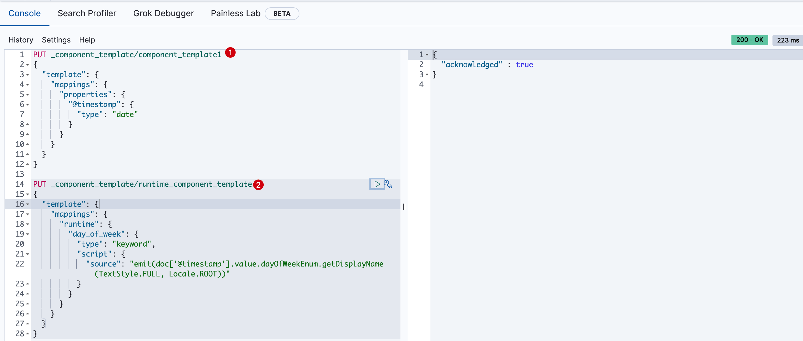
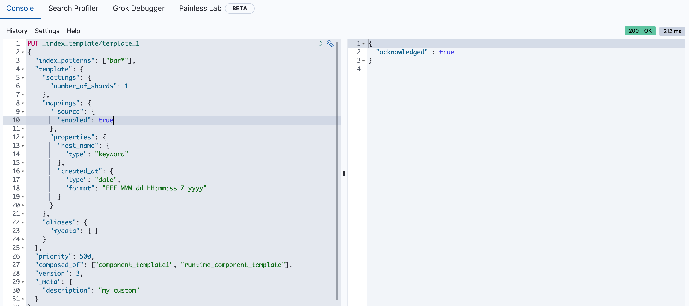
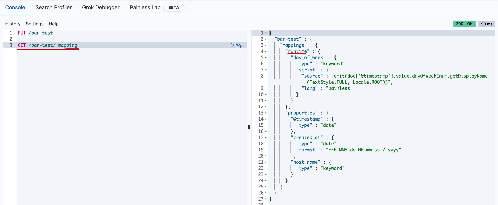
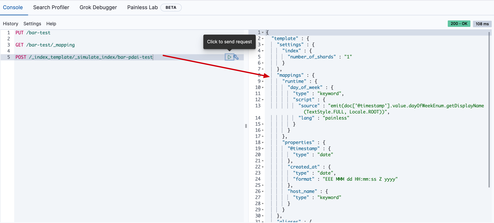
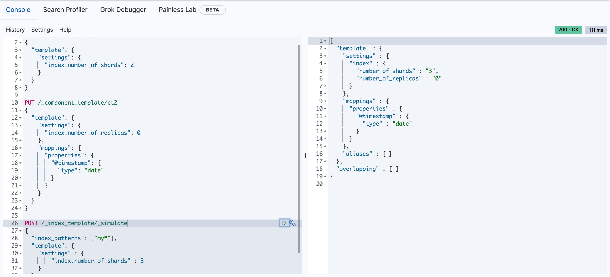

- 01 认知：ElasticSearch基础概念.md
- 02 认知：Elastic Stack生态和场景方案.md
- 03 安装：ElasticSearch和Kibana安装.md
- 04 入门：查询和聚合的基础使用.md
- 05 索引：索引管理详解.md
- 06 索引：索引模板(Index Template)详解.md
- 07 查询：DSL查询之复合查询详解.md
- 08 查询：DSL查询之全文搜索详解.md
- 09 查询：DSL查询之Term详解.md
- 10 聚合：聚合查询之Bucket聚合详解.md
- 11 聚合：聚合查询之Metric聚合详解.md
- 12 聚合：聚合查询之Pipline聚合详解.md
- 13 原理：从图解构筑对ES原理的初步认知.md
- 14 原理：ES原理知识点补充和整体结构.md
- 15 原理：ES原理之索引文档流程详解.md
- 16 原理：ES原理之读取文档流程详解.md
- 17 优化：ElasticSearch性能优化详解.md
- 18 大厂实践：腾讯万亿级 Elasticsearch 技术实践.md
- 19 资料：Awesome Elasticsearch.md
- 20 WrapperQuery.md
- 21 备份和迁移.md
因收到Google相关通知，网站将会择期关闭。相关通知内容
06 索引：索引模板(Index Template)详解
索引模板
索引模板是一种告诉Elasticsearch在创建索引时如何配置索引的方法。
- 使用方式
在创建索引之前可以先配置模板，这样在创建索引（手动创建索引或通过对文档建立索引）时，模板设置将用作创建索引的基础。
模板类型
模板有两种类型：索引模板和组件模板。
- 组件模板是可重用的构建块，用于配置映射，设置和别名；它们不会直接应用于一组索引。
- 索引模板可以包含组件模板的集合，也可以直接指定设置，映射和别名。
索引模板中的优先级
- 可组合模板优先于旧模板。如果没有可组合模板匹配给定索引，则旧版模板可能仍匹配并被应用。
- 如果使用显式设置创建索引并且该索引也与索引模板匹配，则创建索引请求中的设置将优先于索引模板及其组件模板中指定的设置。
- 如果新数据流或索引与多个索引模板匹配，则使用优先级最高的索引模板。
内置索引模板
Elasticsearch具有内置索引模板，每个索引模板的优先级为100，适用于以下索引模式：
logs-*-*metrics-*-*synthetics-*-*
所以在涉及内建索引模板时，要避免索引模式冲突。更多可以参考这里
案例
- 首先创建两个索引组件模板：
PUT _component_template/component_template1
{
"template": {
"mappings": {
"properties": {
"@timestamp": {
"type": "date"
}
}
}
}
}
PUT _component_template/runtime_component_template
{
"template": {
"mappings": {
"runtime": {
"day_of_week": {
"type": "keyword",
"script": {
"source": "emit(doc['@timestamp'].value.dayOfWeekEnum.getDisplayName(TextStyle.FULL, Locale.ROOT))"
}
}
}
}
}
}
执行结果如下

- 创建使用组件模板的索引模板
PUT _index_template/template_1
{
"index_patterns": ["bar*"],
"template": {
"settings": {
"number_of_shards": 1
},
"mappings": {
"_source": {
"enabled": true
},
"properties": {
"host_name": {
"type": "keyword"
},
"created_at": {
"type": "date",
"format": "EEE MMM dd HH:mm:ss Z yyyy"
}
}
},
"aliases": {
"mydata": { }
}
},
"priority": 500,
"composed_of": ["component_template1", "runtime_component_template"],
"version": 3,
"_meta": {
"description": "my custom"
}
}
执行结果如下

- 创建一个匹配
bar*的索引bar-test
PUT /bar-test
然后获取mapping
GET /bar-test/_mapping
执行结果如下

模拟多组件模板
由于模板不仅可以由多个组件模板组成，还可以由索引模板自身组成；那么最终的索引设置将是什么呢？ElasticSearch设计者考虑到这个，提供了API进行模拟组合后的模板的配置。
模拟某个索引结果
比如上面的template_1, 我们不用创建bar*的索引(这里模拟bar-pdai-test)，也可以模拟计算出索引的配置：
POST /_index_template/_simulate_index/bar-pdai-test
执行结果如下

模拟组件模板结果
当然，由于template_1模板是由两个组件模板组合的，我们也可以模拟出template_1被组合后的索引配置：
POST /_index_template/_simulate/template_1
执行结果如下：
{
"template" : {
"settings" : {
"index" : {
"number_of_shards" : "1"
}
},
"mappings" : {
"runtime" : {
"day_of_week" : {
"type" : "keyword",
"script" : {
"source" : "emit(doc['@timestamp'].value.dayOfWeekEnum.getDisplayName(TextStyle.FULL, Locale.ROOT))",
"lang" : "painless"
}
}
},
"properties" : {
"@timestamp" : {
"type" : "date"
},
"created_at" : {
"type" : "date",
"format" : "EEE MMM dd HH:mm:ss Z yyyy"
},
"host_name" : {
"type" : "keyword"
}
}
},
"aliases" : {
"mydata" : { }
}
},
"overlapping" : [ ]
}
模拟组件模板和自身模板结合后的结果
- 新建两个模板
PUT /_component_template/ct1
{
"template": {
"settings": {
"index.number_of_shards": 2
}
}
}
PUT /_component_template/ct2
{
"template": {
"settings": {
"index.number_of_replicas": 0
},
"mappings": {
"properties": {
"@timestamp": {
"type": "date"
}
}
}
}
}
模拟在两个组件模板的基础上，添加自身模板的配置
POST /_index_template/_simulate
{
"index_patterns": ["my*"],
"template": {
"settings" : {
"index.number_of_shards" : 3
}
},
"composed_of": ["ct1", "ct2"]
}
执行的结果如下
{
"template" : {
"settings" : {
"index" : {
"number_of_shards" : "3",
"number_of_replicas" : "0"
}
},
"mappings" : {
"properties" : {
"@timestamp" : {
"type" : "date"
}
}
},
"aliases" : { }
},
"overlapping" : [ ]
}

参考文章
https://www.elastic.co/guide/en/elasticsearch/reference/current/index-templates.html
© 2019 - 2023 Liangliang Lee. Powered by gin and hexo-theme-book.